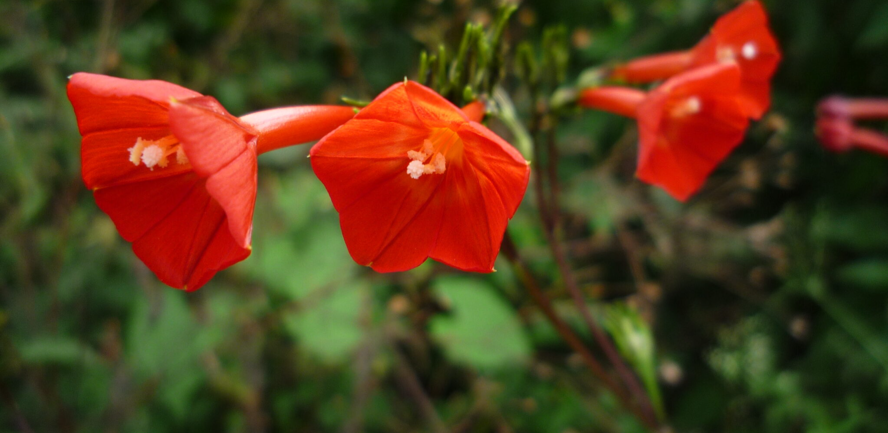

The Ipomoea Proyect

El Proyecto Ipomoea es una iniciativa de investigación colaborativa centrada en la taxonomía y la evolución de Ipomoea , el género más grande de la familia Convolvulaceae. El proyecto integra filogenética molecular, estudios de herbario y de campo, y datos históricos para esclarecer las relaciones entre especies, identificar nuevos taxones e investigar diversos patrones evolutivos, como la dispersión a larga distancia o el desarrollo de raíces de almacenamiento. Un aspecto clave de nuestra investigación es comprender la historia evolutiva de Ipomoea batatas (L.) Lam. , la batata, y sus parientes silvestres, lo que permite esclarecer su domesticación y su expansión global. Mediante una investigación exhaustiva y la colaboración internacional, nuestro objetivo es mejorar la precisión taxonómica y los esfuerzos de conservación de este grupo de plantas, de gran importancia ecológica y económica. Este sitio web se diseñó principalmente como una plataforma para poner a disposición las bases de datos que sustentan el proyecto, tanto taxonómicas como corológicas, así como filogenias moleculares y herramientas para ayudar a identificar especies de Ipomoea en todo el mundo. Lo que ve ahora es el sitio web del Proyecto Ipomoea 2.0 , una versión renovada con un aspecto más moderno y una mejor integración con las bases de datos globales de biodiversidad. Se actualiza continuamente y, por lo tanto, debe considerarse un trabajo en progreso.
Nuestro trabajo sobre Ipomoea comenzó en Oxford hace más de una década. Desde entonces, muchos investigadores de todo el mundo han colaborado en el proyecto.
University of Oxford, United Kingdom
University of Oxford & Royal Botanic Gardens, Kew, United Kingdom
Universidad Complutense de Madrid, Spain
University of Michigan, USA
Badan Riset dan Inovasi Nasional RI, Indonesia
Royal Botanic Gardens, Kew, United Kingdom
Royal Botanic Garden Edinburgh, UK